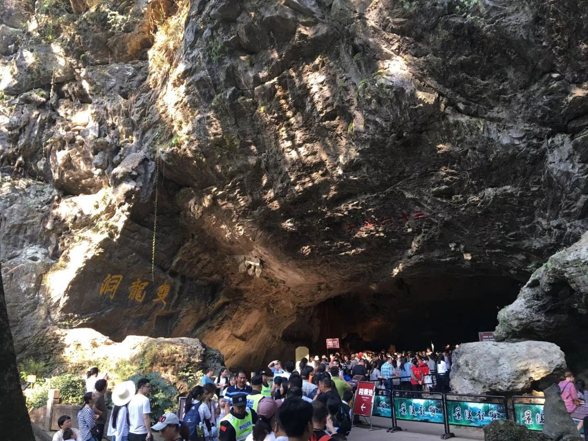

金华
金华市，古称婺州，是浙江省辖地级市 [34]，长江三角洲中心区城市 [1]，长三角南翼重要的先进制造业基地，浙江省中西部中心城市， [65]位于华东地区、浙江省中部，介于东经119°14′—120°46′30″，北纬28°32′—29°41′之间，东邻台州市，南毗丽水市，西连衢州市，北接绍兴市、杭州市，总面积10942平方千米 [34-35]。截至2023年10月，全市下辖2个区、3个县，代管4个县级市，市人民政府驻金华市婺城区双龙南街801号。截至2022年末，金华市常住人口712.7万人。
金华建制已有2200多年。古属越国地，秦入会稽郡。金华古称婺州，因其“地处金星与婺女两星争华之处”得名，自三国吴元宝鼎元年（266年）始设东阳郡建制以来，具有1800多年的历史和灿烂文化，是国家历史文化名城 [2] [12]，历史代表文化为吴越文化。金华昔称“百工之乡”，史称“小邹鲁”，素有“历史文化之邦、名人荟萃之地、文风鼎盛之城、山清水秀之乡”的美誉。金华市有国家级风景区双龙洞、黄大仙祖宫等。
金华市地处金衢盆地东段，为浙中丘陵盆地地区，地势南北高、中部低。“三面环山夹一川，盆地错落涵三江”是金华地貌的基本特征。市境的东、东北有大盘山、会稽山，南属仙霞岭，北、西北接龙门山及千里岗山脉。山地内侧散布起伏相对和缓的丘陵，以江山——绍兴断裂带为界又分为北部丘陵和中部丘陵，市境的中部，以金衢盆地东段为主体，四周镶嵌着武义盆地、永康盆地等山间小盆地，整个大盆地大致呈东北——西南走向，西面开口，由盆周向盆地中心呈现出中山、低山、丘陵岗地、河谷平原阶梯式层状分布的特点。盆地底部是宽阔不一的冲积平原，地势低平。将军岩海拔22米，为金华市最低点。
金华文化
.jfif)
明清以来，金华一带是盐、丝入赣和漆、瓷入浙的商业贸易地区，加之物产丰饶，故历来是各种戏曲争胜斗奇之地。明中叶流行的义乌腔形成于金华府（治今浙江金华）属义乌县。明末的高腔、昆腔，清初的乱弹腔，清中叶的徽戏，均曾在金华流行。
了解更多金华市有国家级风景区双龙洞，黄大仙祖宫亦坐落于此。省级风景区永康方岩、兰溪六洞山地下长河、浦江仙华山、武义郭洞—龙潭、磐安花溪、百杖潭、双峰漂流、大盘山国家自然保护区、诸葛八卦村、仙源湖旅游度假区、东阳花都-屏岩、汤溪九峰山等，或为山奇，或为水秀，可谓各擅胜场。金华的文物古迹与奇山秀水交相辉映，有国家级文保单位10处，省级文保单位37处，县（市）级文保单位300多处，馆藏文物达3万多件。
了解更多